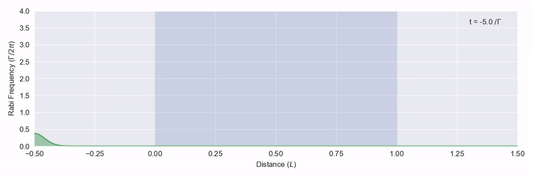
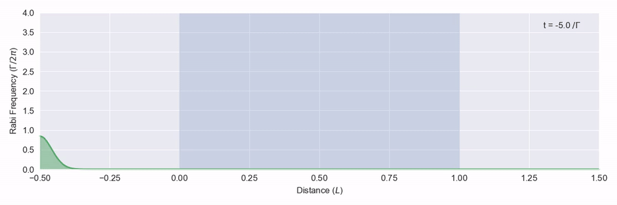
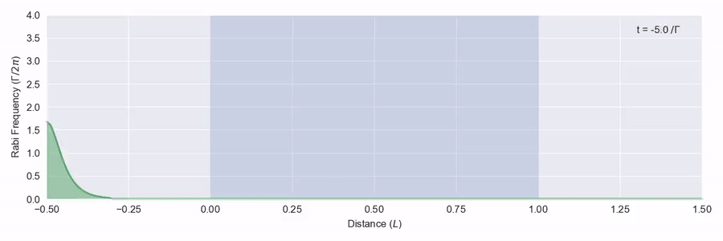
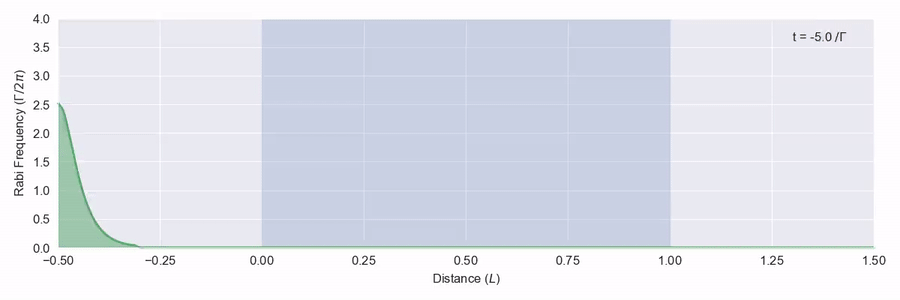
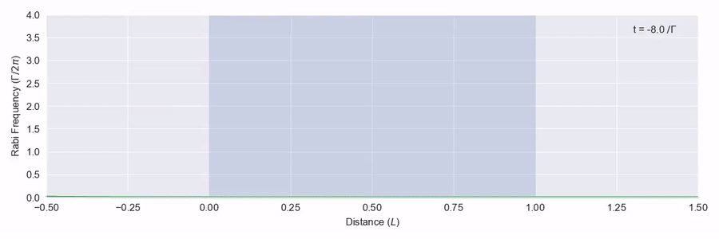

Optical Solitons
2018-10-12
This is part two in a series presenting some of the kinds of systems you can model with MaxwellBloch, a scientific Python package I developed to model the propagation of light through thermal quantised systems like atomic vapours. In part one we looked at how you can make light go faster than the speed of light using anomalous dispersion. Some of the basics of the propagation model are covered there so I recommend reading that first.
One thing I mentioned in that post was that to get the dispersion we wanted for fast group velocity, we had to deal with high absorption. They always come together in the linear system due to a mathematical relation between them. But strong absoprtion, if you can’t control it, can be a problem in designing quantum optical technology. If all your light gets absorbed as soon as it hits the atoms you can’t do much with it. Which brings us to asking whether there’s a way to get light to travel through a highly dispersive medium without the absorption.
Self-induced Transparency
You probably guessed I was going to say that there is: it’s called self-induced transparency. You need a strong, short pulse that has a certain shape. First in figure 1 we’ll look at a pulse that doesn’t have the right shape – it isn’t a big enough pulse.

The blue region represents a large number of two-level atoms that have a transition on resonance with the frequency of the light pulse, and we see that the pulse is quickly absorbed and scattered. In figure 2 we see a bigger pulse that has the right sort of shape moving through the same atom region.

This time the pulse is adjusted as it hits the atoms, but it doesn’t actually lose any energy and leaves the back of the atom region at the right just as it came in from the left. What happens here is that as the pulse moves through the atoms, the light intensity is just enough to excite each atom to its excited state and then down again via stimulated emission to the ground state. This all happens within the phase memory of the atoms.1
I mentioned that the pulse shape is important – specifically it is the pulse area given by
\theta(z) = \int^\infty_{-\infty} \Omega(z, t) \mathrm{d} t
that is critical, where \Omega is the pulse Rabi frequency, which is related to the intensity of the light pulse – it’s what is shown on the y-axis of these plots.
If we have a pulse area less than π, as in figure 1, the pulse is absorbed. For a pulse area bigger than π, the pulse will grow2 to 2π as it moves into the medium and form a specific shape given by
\Omega_{2\pi}(z,t) = \frac{2}{t_s} \mathrm{sech} \left( \frac{t - z/v_g}{t_s} \right)
where \mathrm{sech} is the hyperbolic secant function, t_s describes the width of the pulse and v_g is its group velocity. If we put in an input pulse with exactly this shape in at the front of the medium, we should see it keep its shape all the way through. This is what happens, as shown in figure 3.
The pulse gets squashed and slowed down a bit as the pulse energy spends some non-zero amount of its time as an excitation in the non-moving medium.
The pulse in self-induced transparency is an example of an optical soliton. More on that later. I like to think of the optical soliton like a busy waiter who needs to fight his way through a crowded bar. As he squeezes through he knocks the first patron’s drink. Luckily he’s got quick reactions and catches it before it has time to spill, then turns and bumps straight into the second drinker’s arm. Again he catches the drink, and carries on this way bumping and catching until he reaches the door. Phew. He’s moved through more slowly than if the bar was empty, but just about reached the other side in one piece with nothing spilled.
Pulse Breakup
What happens if we put in pulses with an area bigger than 2\pi? In figure 4 we put in a pulse with an area of 4\pi. It turns out that there aren’t any solutions to the proagation equations with a 4\pi area, so what happens is the pulse breaks up into two. The first one is narrower and travels faster.3

In figure 5 we put in a 6π pulse. This one breaks up into three. Note that the last two form the same as the 4π resultant pulses and travel at the same speed.

Collisions
One last thing I want to show you. Not only are solitons resistant to dispersion as they propagate, they even keep their shape when they collide. In figure 6 we have two 2π pulses moving through the atoms at different speeds. When the later one moves through and overtakes the earlier one, they both continue with the same shape.

‘That Singular and Beautiful Phenomenon’
The soliton or solitary wave is an example of a phenomenon from classical physics, and can occur on rare occasions in channels of water. Unlike ordinary waves, the soliton holds its shape without spreading and can travel along at a fixed speed over large distances. The story of the discovery is well known to physicists – in 1834 the engineer John Scott Russell saw one formed from the bow of a boat on the Grand Union Canal near Edinburgh and chased it down the on his horse for a few miles before deciding it wasn’t going to stop. In the 60s and 70s, researchers in nonlinear optics discovered that solitons may be formed in light pulses, as we’re simulating here, and can be used to send signals down optical fibres over large distances.
References
Thomas P. Ogden (2016), Resonant Pulse Propagation in Dense Atomic Vapours. PhD Thesis.
S.L. McCall and E.L Hahn (1969), Self-Induced Transparency. Physical Review, 183.
R. E. Slusher and H. M. Gibbs (1972), Self-induced transparency in atomic rubidium. Physical Review A, 5(4).
Alan Champneys (2018), Westward Ho! Musing on Mathematics and Mechanics. Mathematics Today, Apr 2018.
Footnotes
This is where a linear model won’t do and you need a nonlinear model like MaxwellBloch that takes into account that the atoms have coherence.↩︎
You may be wondering, What happens to conservation of energy if the pulse grows? Note that the integral is over time and we’re saying it increases across space. The integral across space doesn’t increase over time.↩︎
I don’t know how this fits with my waiter analogy. Maybe in this case the waiter is actually two kids in a big trenchcoat.↩︎